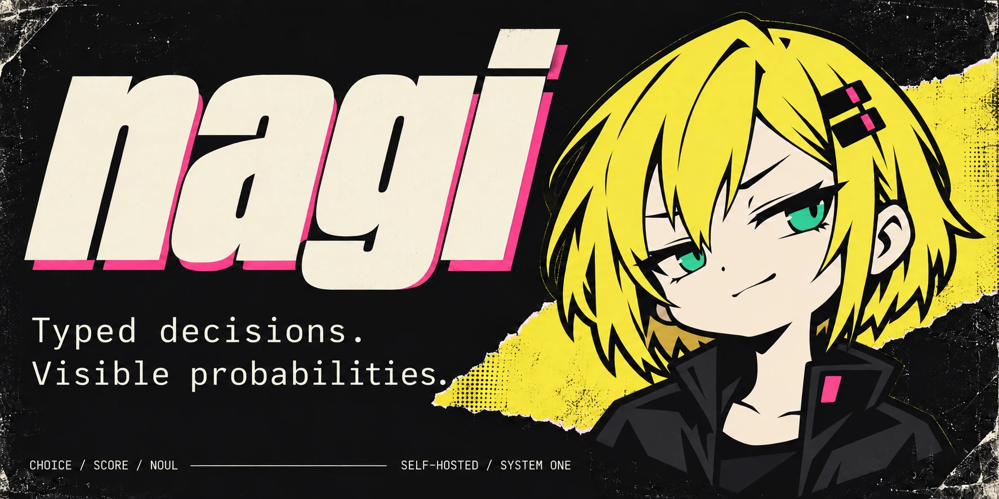

NAGI / SYSTEM ONECHARACTER IDENTITY / 03TYPED DECISIONS.
VISIBLE PROBABILITIES.
BRAT INTELLIGENCEPunk energy. Typed output. Một hệ nhận diện manga-zine sắc, gọn và có thái độ.

01 / Original signal
Mascot riêng: tóc bob vàng bất đối xứng, mắt xanh, kẹp tóc hồng và jacket đen. Biểu cảm kiêu nhẹ, bất cần.
02 / Ink meets acid
ink#111114
bone#F3EEDB
yellow#F5E642
green#36D988
pink#FF4D94
muted#B7B4AC
line#48484D
03 / Loud identity. Clear data.
MAKE THE BRAND LOUD.
Chữ condensed nghiêng, cạnh cắt chéo, halftone và tape. Texture nằm trong artwork; nội dung kỹ thuật giữ sạch và dễ đọc.
Display 72–104 px
Body 16/24 px
Data: monospace
Radius: 0 px
CHOICE / ILLUSTRATIVE EXAMPLEWhich option matches?
A / SELECTED0.72
B0.20
C0.08
Demo values / not benchmark results 04 / Voice with teeth
“Typed decisions. Visible probabilities.”
“Run Nagi.” / “See the distribution.”
Tự tin và ít chữ. Sự nổi loạn nằm ở hình thức; mô tả khả năng và xác suất phải chính xác.